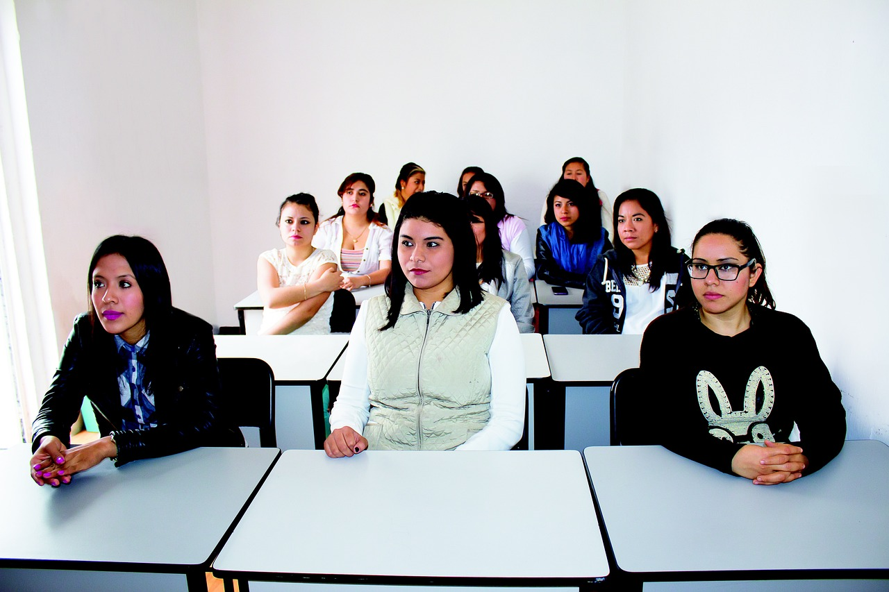
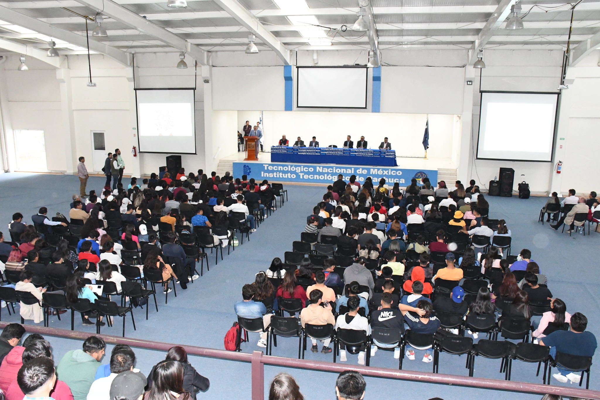
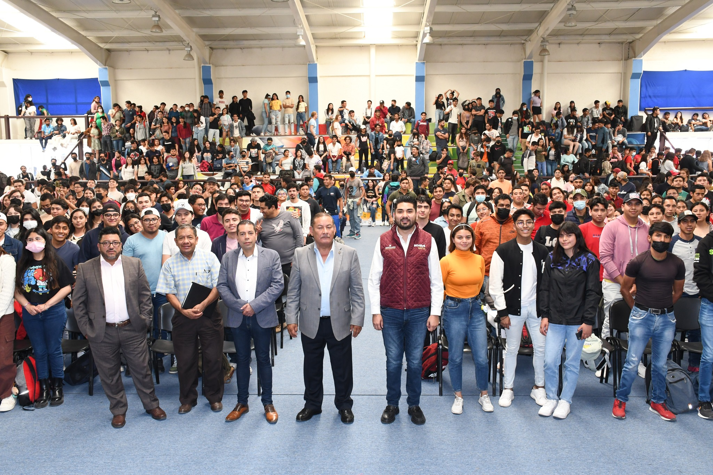

Ejes de la TutoríaLa Tutoría contempla tres ejes fundamentales: desarrollo académico, desarrollo personal y desarrollo profesional que se ofrece en cada Instituto Tecnológico. (DGEST, 2013) |
 |
|  |
TutoríaEs un proceso de acompañamiento grupal o individual que un tutor le brinda al estudiante durante su estancia en el Instituto Tecnológico con el propósito de contribuir a su formación integral e incidir en las metas institucionales relacionadas con la calidad educativa; elevar los índices de eficiencia terminal, bajar los índices de reprobación y deserción. |
Ejes de la TutoríaLa Tutoría contempla tres ejes fundamentales: desarrollo académico, desarrollo personal y desarrollo profesional que se ofrece en cada Instituto Tecnológico. (DGEST, 2013) |
|
|  |
Objetivo del programa Institucional de TutoríasContribuir a través de la acción tutorial, al mejoramiento del rendimiento académico de los estudiantes, coadyuvar en el logro de su formación integral, incidir en la disminución de los índices de reprobación, de deserción, y de rezago, además de favorecer la eficiencia terminal (DGEST, 2006). |
Objetivos de la Tutoría
|
 |
Anexos del manual del tutor